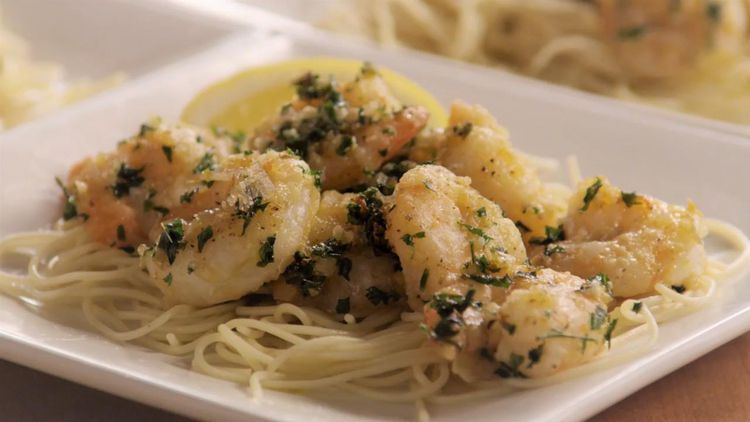

Shrimp Scampi

Description
Shrimp scampi is a vibrant and elegant dish that combines tender, juicy shrimp with a luscious garlic butter sauce, brightened by a splash of lemon and a touch of white wine. The shrimp are quickly sautéed to perfection, absorbing the rich flavors of the sauce while maintaining their delicate, succulent texture. Tossed with al dente pasta or served over a bed of zucchini noodles for a lighter twist, this dish is a perfect balance of richness and freshness, making every bite irresistibly delicious.
Ideal for both weeknight dinners and special occasions, shrimp scampi is a dish that feels indulgent yet comes together in minutes. The buttery, garlicky sauce coats the shrimp and pasta beautifully, while the hint of citrus adds a refreshing contrast. A sprinkle of fresh parsley and a dusting of Parmesan cheese elevate the flavors, creating a restaurant-quality meal that's simple to prepare. Serve it with crusty bread to soak up the extra sauce, and enjoy a dish that's as comforting as it is sophisticated.
Ingredients
- ½ cup all-purpose flour
- ¼ teaspoon salt
- ½ teaspoon freshly ground black pepper
- ¼ teaspoon cayenne pepper
- 1 ½ pounds fresh shrimp, shelled and deveined without tails
- ½ cup olive oil
- 4 cloves garlic, minced
- 1 shallot, chopped
- ½ cup fresh parsley, minced
- ½ teaspoon dried oregano, crushed
- 2 tablespoons white wine
- 2 tablespoons brandy
Steps
- In a small bowl, combine flour, salt, pepper and cayenne pepper. Mix thoroughly. Dredge shrimp in flour mixture.
- In a large skillet, saute dredged shrimp in olive oil for 5 minutes over high heat. Toss shrimp often to prevent burning. Transfer shrimp with a slotted spoon to a serving dish, leaving the oil in the pan.
- In the same pan, saute the garlic, shallot, parsley and oregano over medium heat for 3 minutes; stirring constantly. Spoon the mixture over the shrimp. Return pan to the heat. Preheat your broiler for medium heat.
- Pour the wine and brandy into the skillet and ignite with a match or lighter. When the flames die down, stir to loosen any browned bits on the bottom of the skillet; pour over shrimp.
- Place the serving dish of shrimp in a preheated broiler for about 2 minutes.